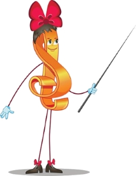

«Музика є самим чудодійним, самим тонким засобом залучення до добра, краси, людяності. Почуття краси музичної мелодії відкриває перед дитиною власну красу - маленька людина усвідомлює свою гідність.»
В.А. Сухомлинський.
Займаючись музикою Ваша дитина, можливо, й не стане другим Моцартом, але їй буде краще даватися математика і фізика в школі, вона набуде багато корисних навичок (таких як посидючість і наполегливість) і навчиться більш тонко відчувати світ.